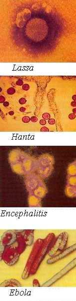
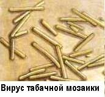
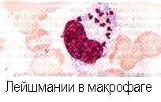

Глава 2. Иммунная защита от инфекционных агентов и её издержки
По причинам не столько дидактического, сколько организационного характера, отечественные руководства по патофизиологии и иммунопатологии, как правило, опускают вопросы инфекционной иммунологии. Они преподаются не на кафедрах патофизиологии, а в ходе изучения микробиологии. Это, однако, не означает, что инфекционные болезни не имеют своей этиологии и патогенеза, то есть патофизиологии. Логика данной книги, посвящённой ответам клеток, тканей и целостного организма на патогенные воздействия, требует краткого рассмотрения механизмов иммунной защиты от экзогенных инфекционных патогенов, поскольку в этой сфере ярко проявляется относительная целесообразность и потенциальная патогенность защитно-приспособительных реакций. Кроме того, переходя от описания механизмов иммунного ответа сразу к обсуждению аллергии, мы создали бы принципиально неверное впечатление, что столь сложная система проявляет себя только созданием разных неприятностей. Штатное осуществление умеренного и хорошо отрегулированного иммунного ответа против чужеродных и собственных антигенов не ведет к развитию аллергии или аутоиммунных болезней.Иммунная система в норме достаточно эффективно защищает организм от инфекций или позволяет минимализовать их последствия и ускорить выздоровление. Вместе с тем, не все результаты иммунного ответа на экзогенных возбудителей полезны для организма. Иммунный ответ часто ведёт к невыигрышным для хозяина последствиям или оказывается неэффективным. Некоторые нюансы взаимодействия иммунной системы и возбудителей могут способствовать аутоиммунным и аллергическим болезням, а также иммунодефицитам.
Наиболее простые из экзогенных патогенов - прионы. Это не содержащие нуклеиновых кислот доклеточные облигатные паразиты. Прионы вызывают спонгиозные трансмиссивные энцефалопатии млекопитающих и человека. Прионы устойчивы к кипячению и детергентам. Их репродукция возможна благодаря наличию в нормальном эукариотическом геноме гена, кодирующего последовательность белка PrP 27-30 кД. Прионы каким-то, пока неясным образом, вызывают дерепрессию данного гена, с образованием из белка-предшественника устойчивых к протеолизу молекул, на основе которых, в так называемой реакции ядрообразующей белковой полимеризации, формируется амилоид (С.Флемминг, 1983, С.Б.Прусинер, 1997).
Происходит отложение амилоидных бляшек в тканях головного мозга, особенно в больших полушариях и мозжечке, с их вакуолярной дегенерацией, атрофией и астроглиозом. Прионовую этиологию имеют несколько медленно прогрессирующих заболеваний ЦНС, передающихся ятрогенным путём (в практике нейрохирургии, через роговичный трансплантант, при лечении человеческими гипофизарными препаратами), а также пищевым путём - при употреблении заражённых мясопродуктов и при каннибализме. Именно среди каннибалов племени форе, на острове Папуа впервые и были описаны болезни этого класса. Вначале их считали наследственными, пока Д.К.Гайдусек (1976) не доказал инфекционную природу этих заболеваний. Всеобщее внимание проблемы прионовых болезней привлекли, когда от одного из таких недугов скончался выдающийся американский хореограф Джордж Баланчин, и стало ясно, что это не редкая этнографическая экзотика, а новый класс повсеместно встречающихся инфекций. Случаи прионопатий были обнаружены в катамнезе у лиц, много лет назад лечившихся от гипофизарного нанизма трупным гормоном роста.
В частности, прионы вызывают болезнь скрепи у овец, коровье бешенство и человеческие недуги - болезнь куру и болезнь Крейтцфельда-Якоба. Частота последней доходит до 1:1000000 в год. Реже встречаются фатальная прионовая семейная бессоница, синдром Альперса и спино-мозжечковая атаксия с деменцией и амилоидозом (синдром Херстманна-Штрейсслера-Шейнье). Для прионопатий характерны очень длительный инкубационный период с последующим быстрым прогрессированием (атаксией, миоклонусом, деменцией) и смертью. Характерно, что иммунная система абсолютно толерантна к прионам и не защищает от них, с чем и связано длительное бессимптомное течение прионовых заболеваний. Очевидно, это связано с убиквитарностью нормальных гомологов прионового белка.

Следующий класс патогенов - вирусы вызывает эффективный иммунный ответ в разнообразных формах. В местах внедрения в слизистые и кожу вирусы атакуются иммуноглобулином А и интерферонами, в фазе вирусемии возбуждают цитокиновый ответ и подвергаются действию циркулирующих иммуноглобулинов, а клетки органов-мишеней, заражённые вирусом, экспрессируют вирусные антигены и неоантигены, индуцированные вирусом, и служат объектом воздействия цитотоксических Т-клеток, нормальных киллеров, антителозависимых К-клеток, а также комплемента и фагоцитоза.


Более того, иногда гуморальный ответ при вирусных инфекциях ведет к пагубному результату. Нейтрализация вирусов антителами может привести к появлению персистирующей фракции вируса или к иммунокомплексным заболеваниям. Так, заражение вирусом лимфоцитарного хориоменингита провоцирует иммунокомплексный гломерулонефрит у мышей. Фагоцитоз комплексов вируса и антител с фрагментами комплемента может инфицировать фагоциты или убрать с клеточной поверхности вирусные антигены, сделав заражённые клетки менее доступными для иммунного надзора цитотоксических лимфоцитов. Особенно эффективно обманывает иммунную систему вирус иммунодефицита человека (см. ниже раздел “Иммунодефициты”).
Сама природа ведущего звена антивирусного иммунитета требует своего рода “огня по площадям”, когда цитотоксическими эффекторами уничтожаются не вирионы, а собственные клетки, содержащие вирусные или вирус-индуцированные антигены (Б.Бламберг, 1976). Уже одно это делает побочные последствия борьбы иммунной системы с вирусной инфекцией достаточно серъёзными. Мало того, для проникновения в клетки вирусы используют клеточные рецепторы гормонов и других биорегуляторов, например, вирус бешенства - ацетилхолиновый рецептор. П.Плотц (1983) и Н.Филдз (1984) отметили, что иммунный ответ на те белки вируса, которые он использует для проникновения в клетку, должен приводить к появлению аутоантиидиотипов, которые будут иммунологически копировать вирусные эпитопы, взаимодействовать с рецепторами, используемыми вирусами для пенетрации в клетки и вызывать аутоиммунные рецепторные заболевания с блокадой или стимуляцией соответствующих рецепторов. Впоследствии (С.Непом и соавт. 1983) было доказано на примере антиидиотипов к вирусу паротита и реовирусу Т3, что этот механизм, действительно, участвует в вирус-индуцированных аутоиммунных поражениях, соответственно, клеток островков поджелудочной железы и нейронов. Вирусы, как уже отмечалось, могут быть поликлональными активаторами лимфоцитов, что также способствует неточной и избыточной работе иммунной системы, провоцируя синдром системного действия цитокинов и аутоиммунные поражения (например, при инфекционном мононуклеозе).
 Иммунный ответ при бактериальных инфекциях хорошо изучен. В начальную стадию бактериальных инфекций, еще до развития первичного иммунного ответа, действуют многие преиммунные факторы защиты, основанные на неиммунологическом распознавании компонентов бактерий и на неспецифических барьерных механизмах.
Иммунный ответ при бактериальных инфекциях хорошо изучен. В начальную стадию бактериальных инфекций, еще до развития первичного иммунного ответа, действуют многие преиммунные факторы защиты, основанные на неиммунологическом распознавании компонентов бактерий и на неспецифических барьерных механизмах.
Это, прежде всего, естественные антибиотики нормальной микрофлоры кожи и слизистых человека, которые не дают паразитическим микроорганизмам закрепиться среди комменсалов. Ослабляют микробную агрессию лизоцим естественных экскретов тела, водно-липидная мантия Марчионини на коже, кислота желудка и быстрые изменения рН в желудочно-кишечном тракте, мочевина мочи, а также чисто механические факторы: деятельность мукоцилиарного аппарата дыхательных путей, отшелушивание эпидермиса, промывание мочеполовых путей, относительная непроницаемость покровов тела.
Еще до развития иммунного ответа происходит распознавание некоторых компонентов бактерий защитными эффекторами. Это выражается в запуске нескольких эффекторных механизмов.
Бактериальные липополисахариды активируют альтернативный путь комплемента. ЛПС-чувствительные рецепторы макрофагов и эндотелия, а также рецепторы формилметиониновых пептидов и факторов комплемента, после действия на них этих лигандов, вызывают активацию сторожевой полисистемы крови, фагоцитоза и выработку цитокинов острой фазы. Начинает формироваться лихорадка. Белки острой фазы (С-реактивный протеин, лактоферрин и другие) оказывают бактерицидное действие и ограничивают доступность ростовых факторов для бактерий. Маннан-связывающие сывороточные белки взаимодействуют с бактериальными липоарабиноманнанами, способствуя дополнительной активации фагоцитоза, цитокинового ответа и продукции интерферонов. Все эти мехаизмы взаимодействуют в инфекционном воспалении (см. выше, соответствующий раздел).
Следующая “линия обороны” - ускоренные Т-независимые иммунные ответы на ЛПС, маннаны и антигены жгутиков бактерий. Хотя они ограничиваются синтезом IgM и не очень интенсивны, но способствуют раннему ограничению распространения инфекции и фагоцитозу патогенов (см. выше).
Наконец, развивается специфический иммунный ответ. Циркулирующие иммуноглобулины могут обеспечивать следующие формы антибактериальной защиты:
- нейтрализацию бактериальных токсинов, например, столбнячного.
- инактивацию факторов вирулентности и распространения бактерий, например, гиалуронидаз
- блокаду бактериальных рецепторов ростовых факторов, например железосвязывающих белков.
- нивелировку эффекта бактериальных репеллентов фагоцитов
- опсонизирующий эффект для фагоцитоза бактерий
- литический эффект через комплемент
- блокаду подвижности бактериальных органоидов движения
- предотвращение прикрепления бактерий к клеткам организма путём занятия соответствующих адгезивных молекул
До недавнего времени предполагалось, что иммуноглобулины действуют только как сигналы-маркеры, выполняя распознающие функции. В настоящее время установлено существование у самих молекул некоорых антител каталитической активности, в частности, получены имуноглобулины со свойствами гидролаз и даже ДНК-азы (А.М.Шустер и соавт., 1987).
Параллельно гуморальному ответу, а в случае персистирования бактерий внутри фагоцитов - преимущественно, по сравнению с ним, идут процессы клеточного цитотоксического ответа на клетки хозяина, заражённые бактериями и на сами грам-отрицательные микроорганизмы. Они включают:
- цитотоксичность CD8-положительных Т-клеток
- прямой контакт с NK-клетками
- цитотоксичность gd-Т лимфоцитов слизистых
- цитотоксическое и бактериостатическое действие активированных цитокинами непрофессиональных фагоцитов, например, заражённых фибробластов, на находящиеся в них бактерии.
Механизмы иммунной защиты от бактерий несовершенны и часто становятся источником вторичных повреждений. Избыточный ответ на ЛПС и другие компоненты бактерий может вызывать эндотоксиновый (септический или инфекционно-токсический) шок. Впервые в эксперименте эндотоксиновый шок в 1924 году получил Дж. Санарелли на кроликах, вводя им повторно внутривенно убитых холерных вибрионов. Он обратил внимание что разрешающая доза реакции может быть обеспечена введением иных грам-отрицательных микробов, что резко отличало феномен Санарелли от анафилактического шока, описанного Рише и Портье. На месте первичного внедрения ЛПС-содержащих бактерий создаётся своеобразная избыточная чувствительность к цитокинам и экспрессируются их рецепторы. Этот процесс какое-то время не даёт клинических симптомов. Однако, при развитии бактериемии происходит массированное освобождение цитокинов, и реагирующие на них в местах первичного внедрения эндотелиоциты и макрофаги подвергаются гиперактивации, провоцируют тромбоз, свёртывание, претерпевают некроз. Внешне это проявляется геморрагиями и некротической сыпью. Клиническим примером действия подобного механизма является возникновение восходящей звёздчатой геморрагической сыпи при менингококкцемии. Экспериментально аналогичное местное явление было впервые воспроизведено Г.Дж.Шварцманом (1928) на кроликах, путём двукратной иньекции эндотоксина (подкожно и внутривенно с интервалом в сутки) Вторая внутривенная инъекция приводит к возникновению геморрагического некроза, локализованного в месте первого укола. Практически, как и феномен Санарелли, явление Шварцмана базируется на индуцированном ЛПС и цитокинами внутрисосудистом свёртывании крови.
Бактериальные антигены, служащие мишенями иммунного ответа, могут быть убиквитарными. В этом случае, иммунный ответ на бактерий имеет все шансы перерасти, особенно, при неполадках в системе ГКГС-зависимого распознавания, в аутоиммунную агрессию против самого организма хозяина. Так например, общими эпитопами располагают белки теплового шока бактерий и человека. Yersenia enterocolitica может индуцировать у носителей определённых гаплотипов ГКГС перекрёстный аутоиммунитет к рецептору тиротропного гормона (см. выше) и т.д. . Такие механизмы способствуют аутоиммунным осложнениям бактериальных инфекций.

 Иммуный ответ на грибки менее изучен, чем антибактериальный. Известно, что иммунитет против поверхностных микозов, в основном обеспечивается клеточными механизмами, в частности, лимфоцитарным киллингом заражённых клеток и антителоопосредованной макрофагальной цитотоксичностью против грибков. При глубоких микозах большое значение имеет гранулоцитарный фагоцитоз и активация дефензинов (см. раздел “Фагоцитоз”). Интересно и практически важно, что дефицит контроля аутоиммунитета, сопровождаемый аутоиммунными заболеваниями, нередко идёт параллельно ослаблению иммунитета противогрибкового. В связи с этим, например, не редкость - сочетание кандидамикоза и аутоиммунных эндокринопатий. Персистирование грибков на коже и, особенно, слизистых внутренних органов, в частности, в бронхах и лёгких, ведет к подострым и хроническим иммунокомплексным процессам и ГЗТ (см. ниже об аллергических альвеолитах).
Иммуный ответ на грибки менее изучен, чем антибактериальный. Известно, что иммунитет против поверхностных микозов, в основном обеспечивается клеточными механизмами, в частности, лимфоцитарным киллингом заражённых клеток и антителоопосредованной макрофагальной цитотоксичностью против грибков. При глубоких микозах большое значение имеет гранулоцитарный фагоцитоз и активация дефензинов (см. раздел “Фагоцитоз”). Интересно и практически важно, что дефицит контроля аутоиммунитета, сопровождаемый аутоиммунными заболеваниями, нередко идёт параллельно ослаблению иммунитета противогрибкового. В связи с этим, например, не редкость - сочетание кандидамикоза и аутоиммунных эндокринопатий. Персистирование грибков на коже и, особенно, слизистых внутренних органов, в частности, в бронхах и лёгких, ведет к подострым и хроническим иммунокомплексным процессам и ГЗТ (см. ниже об аллергических альвеолитах).
Паразиты - простейшие и черви - по некоторым оценкам, поражают от 20 до 30% человечества. Только малярией в год заболевает до 2 млн человек - и она остаётся самой распространённой инфекцией после гриппа. Не случайно, борьба против этого худшего врага человечества была увенчана двумя Нобелевскими премиями по медицине (Р.Росс и Ш.Лаверан, см. табл. В на заднем форзаце обложки).
Иммунный ответ на клетки простейших базируется, в основном, на клеточных механизмах. Клеточные эффекторы поражают интрацеллюлярных паразитов, например, лейшманий. Антителоопосредованная клеточная цитотоксичность и опсонин-зависимый фагоцитоз с участием IgM и IgG, лидируют в обеспечении защиты от экстрацеллюлярных форм паразитов, например, амёб. Иммуноглобулины могут блокировать внутриклеточную пенетрацию простейших через специальные рецепторы, занимая их или опосредовать комплементзависимый лизис клеток Protozoa. Для всех этих форм ответа принципиально участие Т-клеток, как CD4-положительных (скажем, против кровяных форм малярийного плазмодия), так и CD8-положительных (против печеночных форм). Считается, что внутриклеточные формы протозойной инфекции требуют значительного участия в иммунном ответе Т-хелперов первого типа. Иммунитет против любых простейших усиливается цитокинами, среди которых особенно важны ИЛ-2,ИЛ-3, ФНОa и, очень сильно активирующий антипротозойные реакции, ИФНg.
Однако, в ходе эволюции паразиты выработали антигенную мимикрию и многочисленные механизмы ускользания от действия эффекторов иммунной системы. К тому же иммунитет против одной стадии развития паразита не всегда распространяется на последующие стадии. Отчасти поэтому, до сих пор нет достаточно эффективной вакцины от малярии.
 Роль фагоцитоза при антипротозойном иммунитете неоднозначна. С одной стороны, макрофагальный иммунозависимый фагоцитоз может быть важным фактором санации, поэтому при всех протозоонозах имеется тенденция к моноцитозу и увеличение печени и селезёнки. С другой стороны, многие простейшие выживают в фагоцитах, ингибируя литические стадии фагоцитоза или избегая их (токсоплазмы, лейшмании, листерии). Это ведёт к персистированию инфекции и формированию гранулём. Цитокины повышают способность макрофагов завершать фагоцитоз простейших. Но их избыток ведет при протозоонозе к затяжному ответу острой фазы и лихорадке и оборачивается кахексией.
Роль фагоцитоза при антипротозойном иммунитете неоднозначна. С одной стороны, макрофагальный иммунозависимый фагоцитоз может быть важным фактором санации, поэтому при всех протозоонозах имеется тенденция к моноцитозу и увеличение печени и селезёнки. С другой стороны, многие простейшие выживают в фагоцитах, ингибируя литические стадии фагоцитоза или избегая их (токсоплазмы, лейшмании, листерии). Это ведёт к персистированию инфекции и формированию гранулём. Цитокины повышают способность макрофагов завершать фагоцитоз простейших. Но их избыток ведет при протозоонозе к затяжному ответу острой фазы и лихорадке и оборачивается кахексией.

Ряд простейших оперирует блокаторами эффекторных механизмов иммунитета: антагонистами комплемента (трипаносомы), репеллентами его факторов (Leishmania donovani), антиоксидантами и блокаторами ферментов дыхательной вспышки фагоцита, антипротеазами, ингибиторами экспрессии генов ГКГС (различные лейшмании). Дизентерийные амёбы предохраняются от иммунной атаки, запираясь внутри цист. Малярийный плазмодий высылает навстречу циркулирующим иммуноглобулинам свой растворимый инактивирующий S-антиген. Это приводит при малярии, как и других протозойных инфекциях, к выраженному иммунокомплексному процессу, способному вызывать вторичную альтерацию тканей. Паразиты варьируют структуру своих антигенов, имитируют эпитопы хозяина или приобретают “конверт” из его адсорбированных антигенов, избегая иммунного надзора. Иногда, как при болезни Чагаса, когда трипаносомы T.cruzi экспрессируют антиген, сходный с антигеном нервных ганглиев хозяина, это обманывает иммунную систему и ведёт к аутоиммунным кардиомиопатии, мегаколону и и мегалоэзофагусу, причём перекрёстно-реагирующие аутоантитела оказывают на миоциты b-адренергическое действие (Л.Стерин-Брода и соавт.,1982). Любопытна способность многих паразитов активировать неспецифическую и антиген-специфическую супрессию, что, очевидно, представляет механизм взаимной толерантности паразита и хозяина, но понижает ответ на другие микрооорганизмы и ведет к интеркуррентной инфекции и иммунодефициту при протозоонозах, например, кала-азаре.Иммунитет против паразитических червей отличается преобладанием участия Т-хелперов второго типа, ИЛ-4, ИЛ-5 и ИЛ-13, как показано ниже, в разделе “Анафилаксия”, он обязательно приводит к активации IgE-зависимых механизмов и участию в цитотоксических антипаразитарных эффектах эозинофилов и базофилов. Анафилаксия не является единственным способом гуморальной противогельминтной защиты, но играет в ней важную роль. Помимо макрофагов, во фрустрированном фагоцитозе макропаразитов придают большое значение тромбоцитам. Особая роль слизистых мастоцитов в защите от гельминтов связана с тем, что их продукты способствуют секреции слизи, улавливающей паразитов и отслойке эпителия слизистых вместе с иммобилизованными глистами.
Механизмы антигенной мимикрии и избегания иммунного надзора, описанные выше на примере Рrotozoa (секвестрация, антигенная вариация, приобретение антигенов хозяина, иммуносупрессия), используются и гельминтами при обороне от иммунной атаки. Поэтому гельминтозы предрасполагают не только к анафилаксии, но и к иммунодефицитам, иммунокомплексным и аутоиммунным поражениям. Так, описторхоз вызывает дефекты клеточного иммунитета (С.В. Волосатов, 1988).
|
|
|
|
|
|